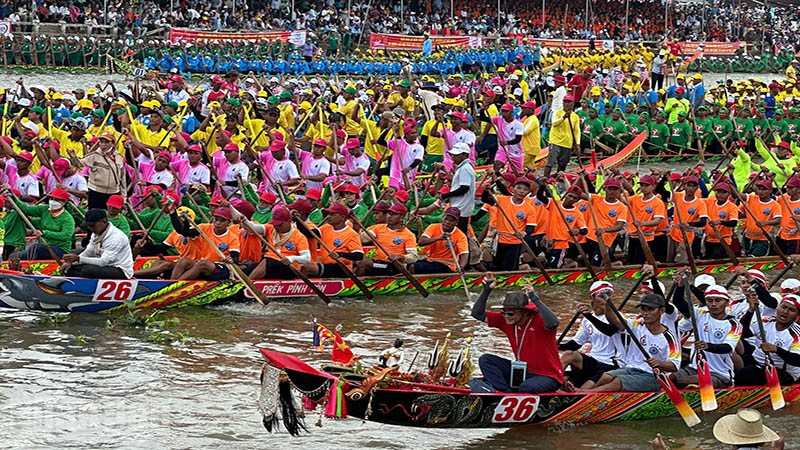

Trống dồn, mái chèo nhịp nhàng và tiếng reo hai bên bờ làm nên một trong những khoảnh khắc sôi động nhất của văn hóa Khmer Nam Bộ, nơi tinh thần đoàn kết được thể hiện rõ trên từng nhịp nước.
Lễ hội Đua ghe ngo là phần rất nổi bật trong đời sống văn hóa Khmer Nam Bộ. Đây không chỉ là cuộc đua thể lực mà còn là nơi cộng đồng cùng hướng về tinh thần đoàn kết, sự kiên cường và niềm vui tập thể sau mùa vụ.
Cái hay của lễ hội là cảm giác vừa thiêng vừa vui. Những chiếc ghe dài lướt nhanh trên mặt nước mang theo niềm tự hào của cả đội, trong khi khán giả hai bên bờ tạo nên bầu không khí cuốn người xem nhập cuộc rất nhanh.

Âm thanh lễ hội góp phần làm tăng cảm giác hào hứng và khí thế thi đấu.
Mỗi đội ghe là niềm tự hào của cả cộng đồng tham gia cổ vũ.
Toàn bộ vẻ đẹp của lễ hội hiện lên qua chuyển động và tốc độ trên sông.
Không nhiều lễ hội có thể khiến người xem rung theo từng nhịp chèo như đua ghe ngo. Văn hóa ở đây hiện ra qua sự phối hợp, kỷ luật và niềm vui chung hơn là những bài thuyết minh dài dòng.
Từ đội thi đến người cổ vũ, tất cả cùng góp phần tạo nên linh hồn của lễ hội.
Trang phục, nhịp trống và tinh thần hội đua đều phản ánh rất rõ bản sắc Khmer.
Chỉ cần đứng gần đường đua vài phút là bạn sẽ bị cuốn vào bầu không khí đó.
Muốn xem đã nhất, bạn nên đến sớm để chọn chỗ quan sát đẹp và theo dõi lễ hội từ lúc còn đang nóng dần lên.
Một góc nhìn tốt sẽ giúp bạn cảm được trọn đường đua và nhịp cổ vũ.
Không khí trước giờ thi thường rất thú vị và giàu cảm xúc.
Đừng chỉ chụp ảnh, hãy thử tập trung nghe trống và xem nhịp chèo đồng đều.
Lúc ấy bạn dễ quan sát ghe, cờ và không khí hậu cuộc đua hơn nhiều.
Nếu bạn thấy website hữu ích, hãy ủng hộ một ly cà phê để nhóm có thêm động lực phát triển.
 Quét mã QR hoặc nhấn vào ảnh để ủng hộ.
Quét mã QR hoặc nhấn vào ảnh để ủng hộ.
Đánh giá từ du khách
Hãy chia sẻ cảm nhận của bạn về nhịp đua ghe ngo và không khí cộng đồng tại lễ hội nhé.